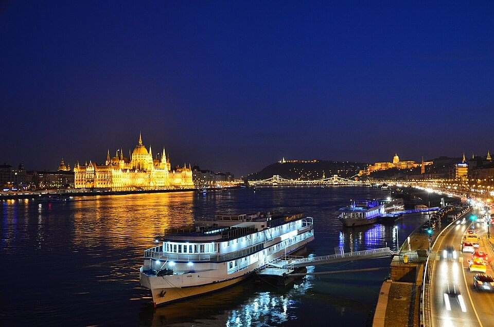
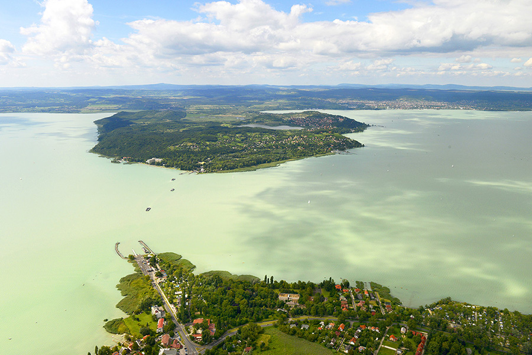
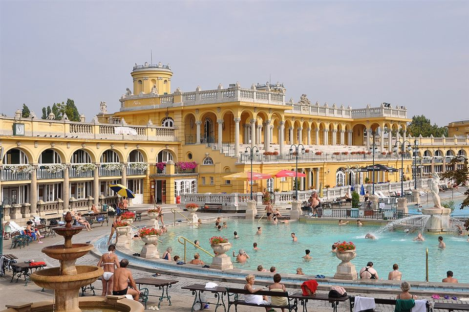

Hungary헝가리 Magyarország
도나우강의 도시, 온천, 그리고 빠르게 변하는 산업
- Capital
- 부다페스트 (Budapest)
- Language
- 헝가리어
- Currency
- 포린트 (HUF)

도나우강과 국회의사당Parliament on the Danube
발라톤 호수 티하니 반도Tihany Peninsula, Lake Balaton
세체니 온천Széchenyi Baths 토카이 와인 산지Tokaj wine region
토카이 와인 산지Tokaj wine region
Explore Hungary
헝가리 더 알아보기
헝가리는 부다페스트의 강변 풍경과 온천문화로 널리 알려져 있다. 이웃한 폴란드·체코와 달리 헝가리어는 우랄어족에 속한다는 점도 흥미롭다. 전통음식의 파프리카 풍미, 지역 민속춤, 자동차·전자·배터리 산업을 함께 소개하면 관광 이미지에 머물지 않는 국가 페이지를 만들 수 있다.


Latest updates
헝가리 최근 뉴스
-
체코·슬로바키아·헝가리, 우크라이나 장기 재원 분담 요구한 독일에 반발
발칸인사이트 다이제스트에 따르면 독일 메르츠 총리는 2027년 이후 우크라이나 장기 재원을 모든 EU 회원국이 분담해야 하며, 합의가 없으면 독일이 2028~2034년 EU 예산을 막을 수 있다고 경고했습니다.
-
헝가리, 전 피데스 시기 장관 수사에서 현금 1,700만 유로 이상 발견…마자르 총리 피데스-KDNP 마피아의 종말
텔렉스에 따르면 헝가리 국가자산회수·보호국은 11월 12~13일 전 국가발전부 장관이자 KDNP 의원인 세슈타크 관련 장소들을 압수수색해 숲속 매장, 창고, 주택, 금고에서 현금을 찾아냈습니다.
-
피초 총리, 독일의 우크라이나 자금 요구를 블랙메일이라 비난…슬로바키아 연정은 의회 과반 흔들려
발칸인사이트 주간 정리에 따르면 피초 슬로바키아 총리는 메르츠 독일 총리의 요구를 블랙메일이라고 비난했습니다. 메르츠 총리는 2027년 이후 우크라이나 장기 자금 지원에 모든 EU 회원국이 참여해야 하며, 합의가 없으면 다음 7년 예산안을 막을 수 있다고 경고했다고 합니다.